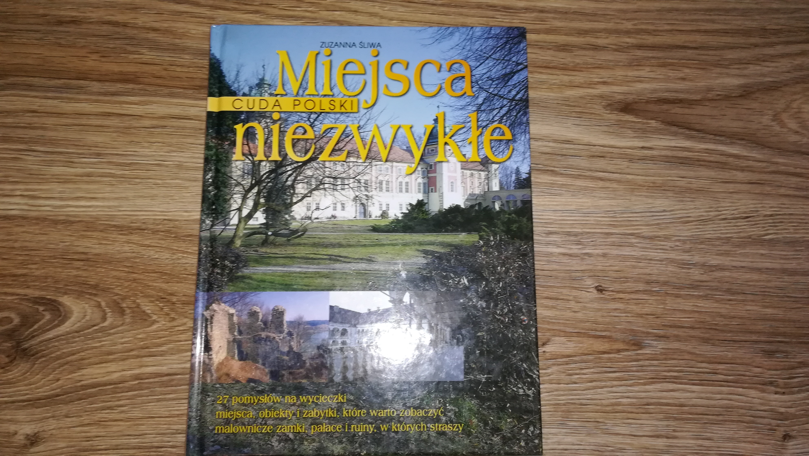
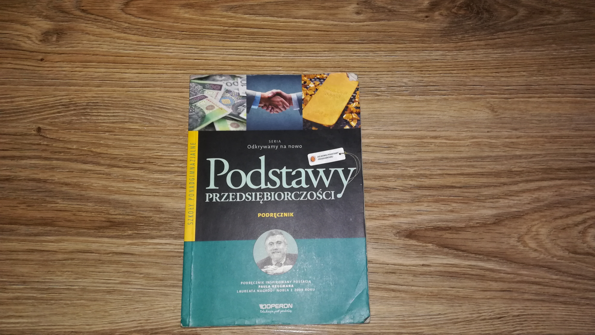

Adam Mickiewicz
"Pan Tadeusz"
Henryk Sienkiewicz
"W pustyni i w puszczy"
Jan Brzechwa
"Kaczka Dziwaczka"
Ks.Jan Twardowski
"Zeszyt w kratkę"
Janina Porazińska
"Szewczyk Dratewka"
| Adam Mickiewicz"Pan Tadeusz" |
| Henryk Sienkiewicz"W pustyni i w puszczy" |
| Jan Brzechwa"Kaczka Dziwaczka" |
| Ks.Jan Twardowski"Zeszyt w kratkę" |
| Janina Porazińska"Szewczyk Dratewka" |
| E.T.A.Hoffmann"Dziadek do orzechów" |
|  | Zuzanna Śliwa"Cuda Polski-Miejsca niezwykłe" |
|  | Jarosław Korba"Podstawy Przedsiębiorczości" |